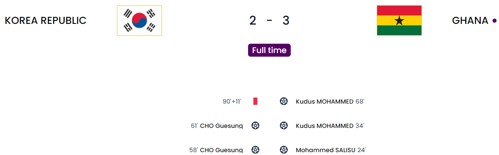
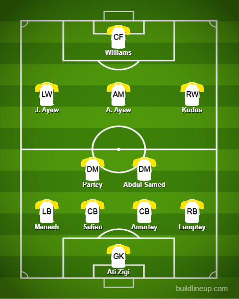

Day 9
Cameroon v Serbia
Game of the tournament. Why be picky when you can have both? Serbia complacency or not?
What a game this was. By far the game of the tournament. Serbia did well to come back from an early goal from Cameroon via Castelletto from the corner with goals from Milinkovic-Savic(Outside the box) and Pavlovic(Free kick). The second half is where the craziness began with Mitrovic giving Serbia a 2-goal lead after a load of passes inside the box. I remember when the Cameroon squad came out I said that I would have liked to see Choupo-Moting start compared to Aboubakar due to form and he did. But it felt like a bad thing when that level of quality was on the bench. This coach decides to have both of them by bringing on Aboubakar. What an impact he made. First, he scored a really great chip when there were doubts about offside but it was later given after a VAR check. Next Aboubaker was sent through again and managed to cut it back for Choup-Moting who leveled. The game could have gone either way. Serbia just couldn’t find their main men. Cameroon also had its chances here and there.
A controversial moment before the game as Onana was dropped and completely axed from the Cameroon squad after a fallout with the coach who wanted someone more traditional which is quite stupid but to each their own. In the end, he wanted someone who could defend well from freekicks. Well, Serbia’s equalizer came from a freekick so……
Cameroon
Serbia
Korea v Ghana

11 goals in 2 games today. We are getting spoiled for good matches after what is forever. Seeing so many teams park the bus and not want to attack in the damn group stages was getting painful to watch as you might have seen in some of my previous writing on the goalless draws. Ghana came to play with Salisu from the corner after a scramble there. Then it was a peach of a cross onto the head of Kudus to make it 2-0. The second half was a different story yet again. Cho Guensung made an immediate impact with 2 great headers to level for Korea. It was neck and neck between both teams before Kudus managed to score his second after the ball fell kindly to him. Korea huffed and puffed massively toward the end after Ghana decided to park the bus but they could not find a breakthrough. The number of crosses they managed to put in the 10 minutes of added time alone was just insane. Toward the end, Korea was not allowed to take a corner and the coach was furious. So furious that he managed to get a red card.
Korea
Ghana

Brazil v Switzerland
Another goal of the tournament contender. Swiss were lackluster. I want that offside rule GONE
Another dominant display that could have been even more honestly. Their chances were from Vini(VAR ruled it out for offside because Richarlison was offside and came back to be involved in the play before the ball went to him) and Rodrygo(Who should have scored but was defended out). Brazil have managed to qualify for the knockouts but with Neymar, Danilo and Alex Sandro in this match being injured, I don’t know what the coach is going to go with but let’s see. Brazil were fluid but I think Neymar’s influence was missed. Paqueta was alright but not that great. I don’t get why Fred was starting ahead of Bruno G who made a great impact when he came on. Brazil actually had no shots on target from Switzerland. They bossed that defense compared to Switzerland. The winner, in the end, came from Casemiro which is definitely another goal of the tournament contender after quick one-touch passes between Vini, Rodrygo and finally Casemiro with a quick volley which had a slight deflection from Akanji.
Brazil
Switzerland
Portugal v Uruguay
Third team through. Greedy(in a good way) Ronaldo wants more goals. Bruno Magnifico.
The next team to go through. Even though I can’t understand Ronaldo going wide it kind of worked here and there and Uruguay are left ruing the chances they had to go ahead. I think Bentancur had the best chance when he went all the way but just couldn’t get the shot past Costa. It would have been a great goal to see if he got it. The breakthrough came in the second half via Bruno except…it was shrouded in controversy as Ronaldo actually got his head towards it and was claiming it sort of. In the end, the stadium announcer gave it to Fernandes and eventually, Adidas proved that the ball did not graze Ronaldo’s head and it was indeed Bruno’s goal. I think that was a genuine cross and if not for Ronaldo I think the keeper would have saved it. Because of that Ronaldo distraction looking back on it, the keeper was completely bamboozled. The second was a penalty after Gimenez handled Bruno’s pass that was given after a VAR check which felt harsh because it was not at all intentional. Bruno stepped up as Ronaldo was already subbed off at that point and calmly slotted it home. To be honest he could have very well had a hattrick towards the end with 2 shots: One of them cannoning off the post and the other being just wide. Portugal through and Uruguay will have to get past Ghana in what is a grudge match from 2010 when Luis Suarez heroically handled the ball and got himself sent off, Ghana missed the spot kick and Uruguay went through. Will history repeat itself in a way with Uruguay going through at Ghana’s expense? Let’s wait and watch.